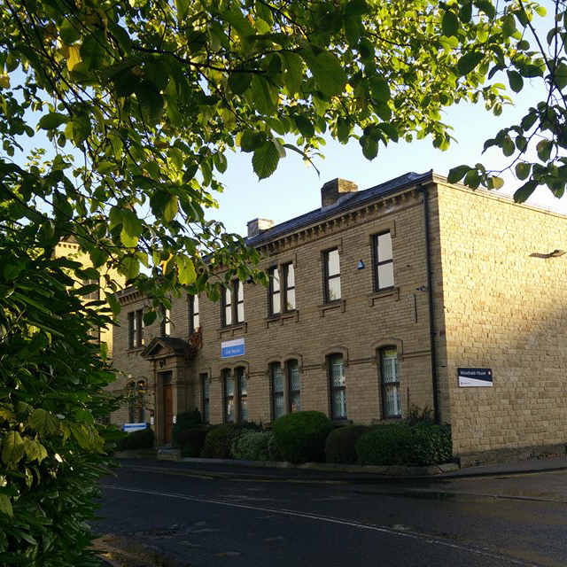
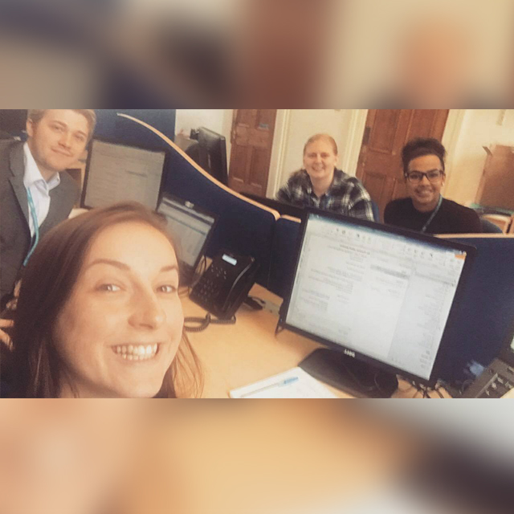

My first week at THIS
Published: 16th September 2017
As part of my course at Huddersfield University, which is Web Technologies, we are advised to take a placement year in between our 2nd and final year. This allows us to get industry experience in the area we would possibly like to work in after our course.
After a successful interview I accepted a placement job at THIS (The Health Informatics Service) as a Student Web Coordinator. The job role involves working on their social media strategy by helping them increase reach, influence and engagement throughout their social media outlets THIS uses as well as creating assets for the team and customers. These assets included banners, buttons and icons.
My first week consisted of meeting with the team, setting up my work laptop with all software I will need to complete client work, having training on the systems they use, working on client projects, starting on my own projects and attending my first meeting.


The software the web team uses are:
- Remedy (used for logging client jobs and time worked on jobs)
- Jabber (used to message the team and call clients)
- Microsoft Office (mainly Word, Outlook & OneNote)
- Adobe Creative Suite
- Code Editor (Komodo)
- Typo3 (Content Management System)
- WordPress (Content Management System)
- Axials (Screensaver Software)
I am really pleased with how my first week has gone as I’ve been thrown in with projects and client work from the start. I’ve worked with many different clients, resolving the issues they have logged. These have been from creating and deploying screensavers to setting up a blog on a client website. This has also meant communicating with them through emails and calling them.
Outside of work I’ve also gotten over my fear of buses (yes, I had a fear of them), and managed to make my way to work and my first meeting on a bus and getting in on time every day.
Overall, THIS have really welcomed me to the team and I feel that my first week has gone as good as it could have done as nothing went wrong, which I defiantly thought something would. I am looking forward to the variety of projects I will be getting involved in throughout the rest of my placement.
FYI: This blog post first appeared on the THIS: Web Team blog.